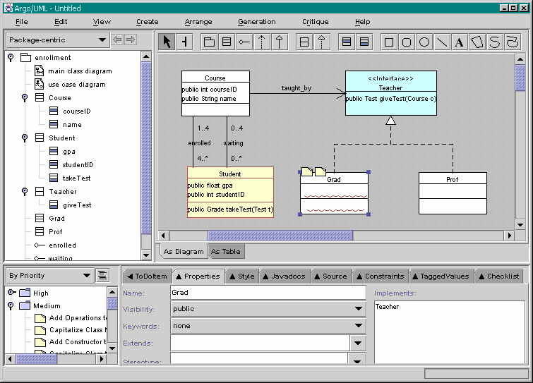

Previous step | Back to ArgoUML Tours | Next step
Color the interface light blue.
To have classes implement this new interface, add a "Grad" and "Prof"
class to the diagram. And then have these two classes Realize
the "Teacher" interface. See the figure below.

Back to ArgoUML Tours
Back to ArgoUML Home